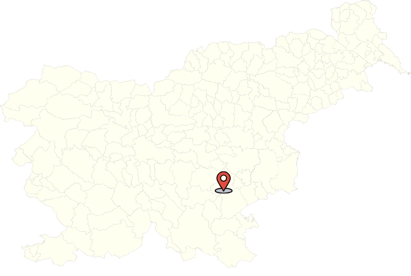

Andrej.n@siol.com
Anan.storitve@gmail.com
386 041 375 675
+386 040 671 064
Sedež: Ljubljanska cesta 89, Novo mesto
Pisarne: Dolenje Kamence 7, 8000 Novo mesto
Parkirišče, skladišče, servis: Brezence 1, 8216 Mirna peč
Smo sorazmerno mlado podjetje, ki ga upravljajo osebe z dolgoletnimi izkušnjami na posameznih področjih. Te dolgoletne izkušnje, volja do uspeha in napredka, predvsem pa veselje in strast do tovornih vozil, je privedla do ustanovitve podjetja Anan d.o.o., katerega ime ima za lastnika še dodaten pomen, ki mu daje še posebno moč in voljo. Zaščitni znak podjetja je lev, ki nas s svojo močjo in ustvarjalno strastjo navdihuje, da presegamo svoje omejitve.
Ustanovitev družbe je bila posledica nekaterih dejavnikov, na podlagi katerih je lastnik podjetja sprejel odločitev, da sam začne s dejavnostjo transporta. Družba je začela z delovanjem z registracijo prvega tovornega vozila v voznem parku, ki se je v naslednjih letih sorazmerno hitro povečeval.
Andrej.n@siol.com
Anan.storitve@gmail.com
386 041 375 675
+386 040 671 064
Sedež: Ljubljanska cesta 89, Novo mesto
Pisarne: Dolenje Kamence 7, 8000 Novo mesto
Parkirišče, skladišče, servis: Brezence 1, 8216 Mirna peč
DOSTAV
MILIJONOV PREVOŽENIH KILOMETROV
ZADOVOLJNIH STRANK
© ANAN d.o.o 2025 | Vse pravice pridržane.
Designed by: Jure Flajs| Icons by icons 8.